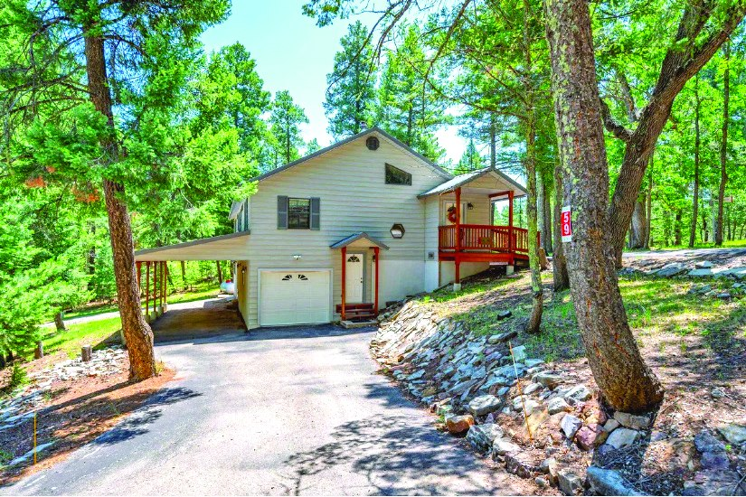
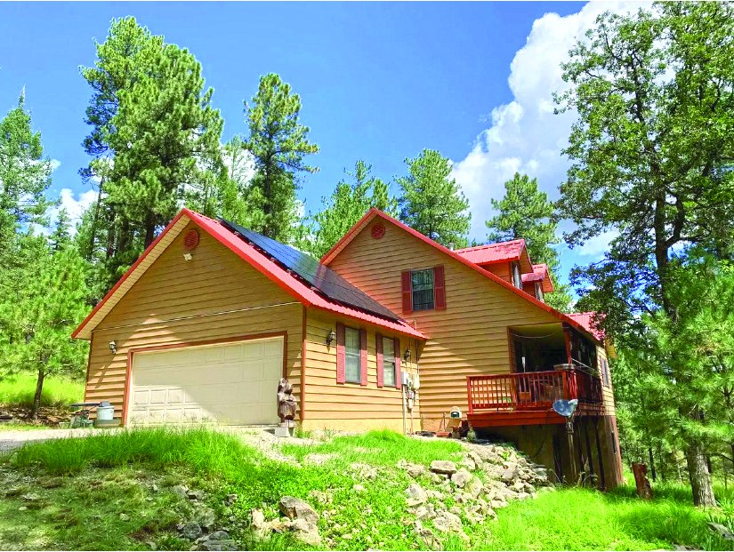
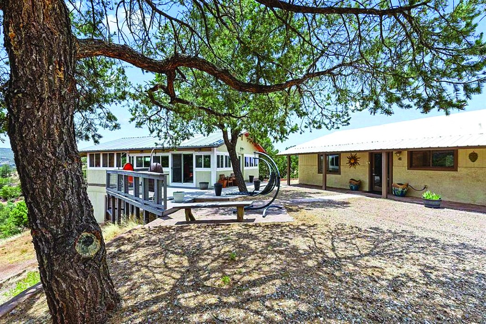

$899,000
80.0 Acre Property in Weed
80.0 acres
Weed, New Mexico
MLS #173244
$899,000
80.0 Acre Property in Weed
80.0 acres
Weed, New Mexico
MLS #173244

3 Bedroom 27.261 Acre Property in Weed
$550,000
| Price | $550,000 |
|---|---|
| Bedrooms | 3 |
| Bathrooms | 1 |
| Land | 27.261 acres |
| Area | Weed, New Mexico |
| MLS # | 172060 |
| Listed by | Aspen Trails Realty |
| Print edition | October 2026 Otero County Edition, page 2 |
About this property
27.261 Acres of Unrestricted Land In Weed, New Mexico, bordering National Forest. Ideal hunting/recreation retreat. At just under 7,000 feet, it offers mild weather, big skies & high‑country scenery. Mostly flat land w/gentle slopes. Excellent for building, camping, or expanding. A 1910 homestead w/solid bones on the property & electricity is nearby. 3 bdrm, 1 bath 1960 fixer‑upper could become a great hunting cabin or base camp. Well is needed; water is currently hauled. No restrictions, perfect for private getaway, off‑grid living, or long‑term investment. Direct National Forest access for exceptional hunting, hiking & outdoor recreation in peaceful, untouched country.
Interested in this property?
Office phone: 575-682-7778
Aspen Trails Realty
Please contact the listing agent or company directly. The Real Estate Roundup is a publisher and does not show or sell properties.
Listing details and photo reproduced from the October 2026 print edition of The Real Estate Roundup (page 2), as printed. Prices and availability can change after publication — confirm with the listing agent.
More Homes
$899,000
80.0 Acre Property in Weed
80.0 acres
Weed, New Mexico
MLS #173244

$545,000 Property MLS #173054 $545,000
4.034 Acre Property in Cloudcroft
2.25 ba · 4.034 acres
Cloudcroft, New Mexico
MLS #171445
$545,000
4.034 Acre Property in Cloudcroft
2.25 ba · 4.034 acres
Cloudcroft, New Mexico
MLS #171445

$574,900 3 Bedroom Property 3 bd · 2.5 ba · 2,264 sq ft MLS #172398 $515,000
23 Mountain Park Rd
78.0 acres
High Rolls, New Mexico
MLS #172974
$515,000
23 Mountain Park Rd
78.0 acres
High Rolls, New Mexico
MLS #172974

$506,000 41 Calico Peak, High Rolls Mtn Park 1,860 sq ft · 3.0 acres High Rolls, New Mexico MLS #172943